Browse the signs
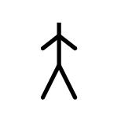
M191 texts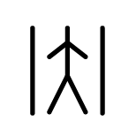
M212 texts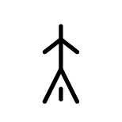
M36 texts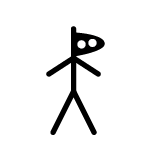
M42 texts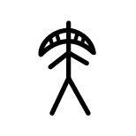
M52 texts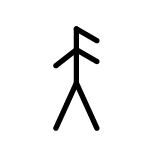
M64 texts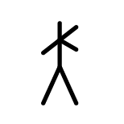
M74 texts M882 texts
M882 texts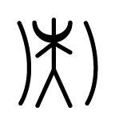
M912 texts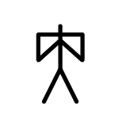
M104 texts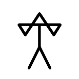
M112 texts M1264 texts
M1264 texts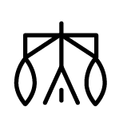
M131 text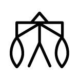
M1412 texts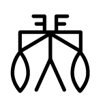
M1574 texts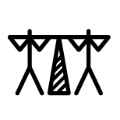
M161 text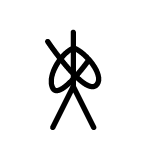
M1787 texts M1818 texts
M1818 texts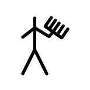
M198 texts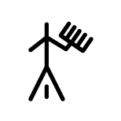
M201 text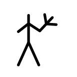
M211 text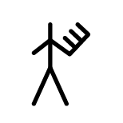
M223 texts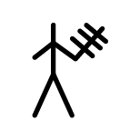
M231 text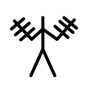
M242 texts M2533 texts
M2533 texts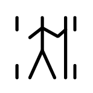
M261 text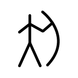
M272 texts M2849 texts
M2849 texts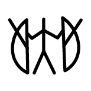
M293 texts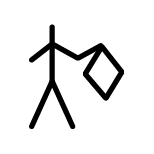
M302 texts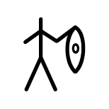
M311 text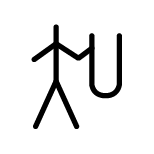
M3211 texts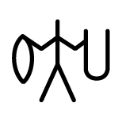
M331 text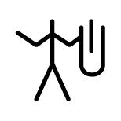
M342 texts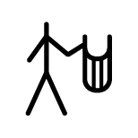
M353 texts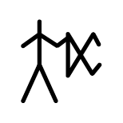
M362 texts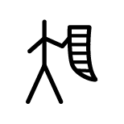
M371 text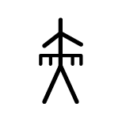
M386 texts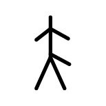
M391 text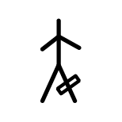
M407 texts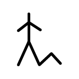
M4111 texts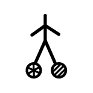
M421 text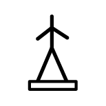
M432 texts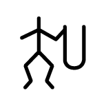
M441 text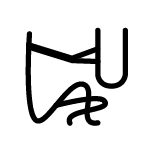
M452 texts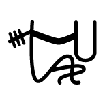
M461 text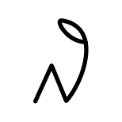
M4713 texts M4892 texts
M4892 texts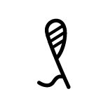
M492 texts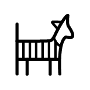
M508 texts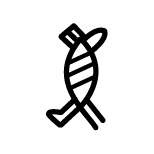
M5184 texts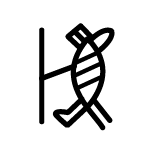
M521 text M53112 texts
M53112 texts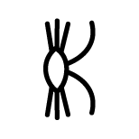
M5417 texts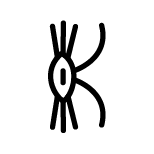
M554 texts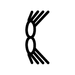
M568 texts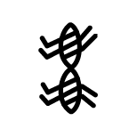
M577 texts M587 texts
M587 texts M59289 texts
M59289 texts M6027 texts
M6027 texts- M611 text
 M6210 texts
M6210 texts M632 texts
M632 texts M642 texts
M642 texts M65172 texts
M65172 texts- M6613 texts
 M67208 texts
M67208 texts- M688 texts
 M693 texts
M693 texts M7069 texts
M7069 texts- M717 texts
- M72155 texts
- M735 texts
 M742 texts
M742 texts M7512 texts
M7512 texts M7614 texts
M7614 texts- M772 texts
- M787 texts
- M791 text
- M804 texts
- M8122 texts
- M821 text
- M834 texts
- M848 texts
 M851 text
M851 text M86132 texts
M86132 texts- M87232 texts
 M881 text
M881 text M89152 texts
M89152 texts M902 texts
M902 texts- M912 texts
- M921 text
- M9310 texts
- M9410 texts
- M959 texts
 M9616 texts
M9616 texts M9778 texts
M9778 texts M9876 texts
M9876 texts M99546 texts
M99546 texts- M10027 texts
- M1011 text
- M102101 texts
 M10313 texts
M10313 texts- M10450 texts
 M1052 texts
M1052 texts- M10627 texts
- M1076 texts
- M1083 texts
 M10928 texts
M10928 texts- M1106 texts
 M1113 texts
M1113 texts M11254 texts
M11254 texts M1135 texts
M1135 texts M1147 texts
M1147 texts- M1151 text
- M1162 texts
- M1171 text
- M1181 text
- M1193 texts
- M1202 texts
 M12149 texts
M12149 texts- M1221 text
 M123178 texts
M123178 texts M12451 texts
M12451 texts- M12518 texts
- M1264 texts
 M12740 texts
M12740 texts- M1288 texts
- M1294 texts
- M13044 texts
- M1311 text
 M1323 texts
M1323 texts- M1331 text
 M13414 texts
M13414 texts- M13524 texts
 M13613 texts
M13613 texts- M13713 texts
- M1383 texts
- M13915 texts
- M1402 texts
- M1414 texts
- M1422 texts
- M1432 texts
- M1441 text
- M1451 text
- M1463 texts
- M1471 text
- M148M1481 text
- M14953 texts
 M15053 texts
M15053 texts- M1511 text
- M1521 text
- M15315 texts
- M1541 text
- M15544 texts
- M1561 text
- M1571 text
- M1584 texts
- M1592 texts
- M1606 texts
- M1614 texts
- M162163 texts
 M1635 texts
M1635 texts- M1641 text
- M1651 text
- M1661 text
- M1677 texts
- M1681 text
 M169134 texts
M169134 texts- M1701 text
 M17191 texts
M17191 texts- M1722 texts
- M17332 texts
- M17411 texts
- M17549 texts
 M176188 texts
M176188 texts M17712 texts
M17712 texts- M17820 texts
- M1791 text
 M18044 texts
M18044 texts- M1812 texts
- M18227 texts
 M1832 texts
M1832 texts- M1845 texts
- M1851 text
- M18631 texts
- M1873 texts
- M1882 texts
 M1894 texts
M1894 texts- M19016 texts
- M1911 text
 M19217 texts
M19217 texts- M19319 texts
- M19443 texts
- M1954 texts
 M1961 text
M1961 text M19755 texts
M19755 texts M1983 texts
M1983 texts- M1992 texts
- M2001 text
 M2018 texts
M2018 texts- M2029 texts
- M2032 texts
 M20449 texts
M20449 texts- M20520 texts
- M2067 texts
- M2071 text
- M2081 text
 M20917 texts
M20917 texts- M2108 texts
 M211170 texts
M211170 texts- M2125 texts
- M2132 texts
- M21413 texts
 M21510 texts
M21510 texts- M21671 texts
- M2179 texts
- M2181 text
- M21911 texts
- M2201 text
- M2214 texts
- M22218 texts
- M2236 texts
 M22413 texts
M22413 texts- M2254 texts
- M22611 texts
- M2271 text
- M2284 texts
- M2295 texts
- M23048 texts
- M2311 text
- M2321 text
- M23327 texts
- M2347 texts
- M2351 text
 M2361 text
M2361 text M2376 texts
M2376 texts M2384 texts
M2384 texts M2391 text
M2391 text- M2403 texts
- M2411 text
 M24226 texts
M24226 texts- M2431 text
 M24466 texts
M24466 texts M24587 texts
M24587 texts- M2461 text
- M2478 texts
- M2481 text
 M249125 texts
M249125 texts- M2508 texts
- M2511 text
 M25242 texts
M25242 texts- M25319 texts
- M25461 texts
- M2551 text
- M2564 texts
- M2572 texts
 M25810 texts
M25810 texts- M2593 texts
- M2601 text
 M26125 texts
M26125 texts- M2621 text
- M2635 texts
- M26411 texts
- M2651 text
- M2661 text
 M267291 texts
M267291 texts- M2684 texts
- M2691 text
- M2701 text
- M2711 text
- M2723 texts
- M2731 text
- M2741 text
- M2752 texts
- M2762 texts
- M2778 texts
- M2782 texts
- M2791 text
- M2802 texts
- M2811 text
- M2823 texts
- M2833 texts
- M28431 texts
- M2851 text
 M28611 texts
M28611 texts- M28761 texts
- M2881 text
- M2894 texts
- M2902 texts
- M2911 text
- M2924 texts
- M293116 texts
- M29445 texts
- M2957 texts
 M29625 texts
M29625 texts- M2976 texts
- M2984 texts
- M2991 text
- M3001 text
- M30112 texts
- M30213 texts
- M30311 texts
 M3045 texts
M3045 texts- M3053 texts
- M3061 text
 M30741 texts
M30741 texts- M3081 text
- M3092 texts
- M3101 text
 M3112 texts
M3112 texts- M3122 texts
- M3132 texts
- M3141 text
 M3151 text
M3151 text- M3161 text
- M3171 text
- M3181 text
- M31923 texts
- M3201 text
 M3216 texts
M3216 texts- M3224 texts
- M3237 texts
- M3241 text
- M32511 texts
- M32623 texts
- M32737 texts
 M32847 texts
M32847 texts- M3297 texts
- M3307 texts
- M3315 texts
- M3323 texts
- M3333 texts
- M3344 texts
 M3352 texts
M3352 texts M336191 texts
M336191 texts M3373 texts
M3373 texts- M3383 texts
- M3391 text
- M3404 texts
 M34149 texts
M34149 texts M342959 texts
M342959 texts M343162 texts
M343162 texts M34432 texts
M34432 texts M34541 texts
M34541 texts- M3461 text
 M34793 texts
M34793 texts M34820 texts
M34820 texts- M3491 text
- M3501 text
- M3511 text
- M3521 text
- M3531 text
 M3541 text
M3541 text- M3552 texts
- M3561 text
- M3571 text
 M35814 texts
M35814 texts- M3592 texts
- M3601 text
- M3611 text
- M3621 text
- M3631 text
- M3643 texts
- M3654 texts
- M3661 text
- M3676 texts
- M3681 text
- M3692 texts
- M3701 text
- M3713 texts
- M3721 text
- M37333 texts
- M3747 texts
- M37542 texts
- M3762 texts
- M3771 text
- M3781 text
 M37910 texts
M37910 texts M3805 texts
M3805 texts M38114 texts
M38114 texts- M3821 text
- M3831 text
 M3845 texts
M3845 texts M3851 text
M3851 text- M38610 texts
- M38795 texts
- M3886 texts
 M38982 texts
M38982 texts- M3903 texts
- M391168 texts
 M3921 text
M3921 text M3937 texts
M3937 texts- M3942 texts
 M3957 texts
M3957 texts- M3961 text
- M39712 texts
- M3987 texts
- M3991 text
- M40014 texts
- M4011 text
 M40287 texts
M40287 texts M40366 texts
M40366 texts- M4045 texts
- M4051 text
- M40613 texts
- M40723 texts
- M4081 text
- M40918 texts
- M4101 text
- M4111 text
- M4124 texts
- M4131 text
- M4141 text
- M4156 texts
- M4162 texts
- M4175 texts
Drawings after Iravatham Mahadevan, The Indus Script: Texts, Concordance and Tables (Archaeological Survey of India, 1977), as served by indusscript.in. Their terms of use are not settled; see licences and picture rights. Counts come from Mahadevan’s concordance and from the ICIT corpus of Wells and Fuls; text counts are distinct texts. 58 signs have a published reading or meaning claim in our lists; 228 are named in at least one project result. The picture groups sort signs by what the drawing shows, not by what a sign means; the descriptions come from the field-cady sign descriptions where they fit the drawing, and from our own reading of the drawing elsewhere (sign_depictions.csv).